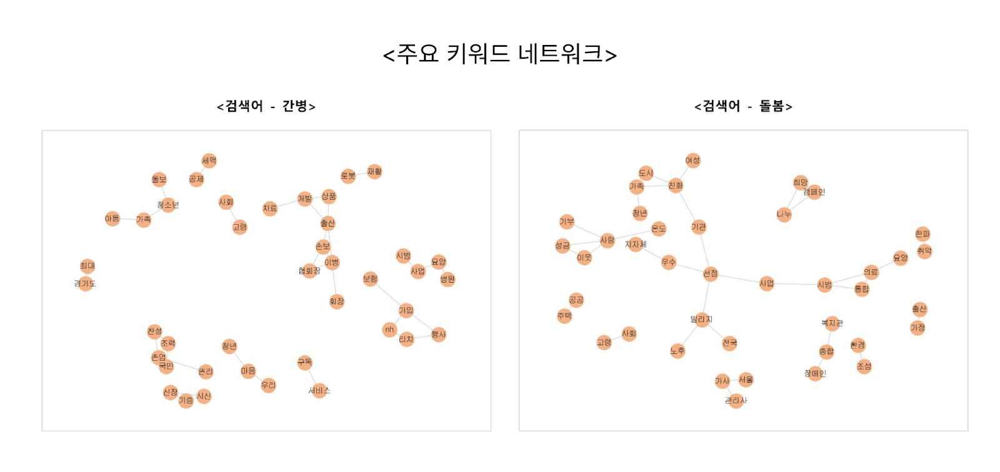

목차
1: 뉴스 크롤링 시스템
웹 크롤링
Selenium
BeautifulSoup
Requests
텍스트 분석
Scikit-learn
KiWi
데이터 저장
MySQL
시각화
Matplotlib
NetworkX
크롤링 모듈 개발
- 키워드 기반 뉴스 수집: 간병, 돌봄 등의 관련 키워드를 사용해 API에 뉴스 정보 요청
- 자동 데이터 정제: 중복 제거, 텍스트 정규화
- 데이터베이스 저장: MySQL을 활용한 구조화된 데이터 저장
분석 및 리포트 생성
- 트렌드 분석: 키워드 빈도 분석 및 네트워크 그래프 생성
- 시각화: 월간 리포트의 '돌봄 트렌드' 챕터에 시각화 자료 추가

출처: 케어네이션 블로그
@https://blog.naver.com/carenation/223812729054?photoView=5
트렌드 분석
월간 트렌드 리포트 자동 생성
키워드 빈도 분석
네트워크 형태로 시각화
데이터 수집
구조화된 뉴스 데이터 저장
자동화된 데이터 정제
학습 내용
- 웹 크롤링: Selenium과 BeautifulSoup을 활용한 동적 웹페이지 크롤링
- 데이터 정제: 텍스트 데이터 전처리
- 데이터 시각화: 키워드 데이터의 상관분석을 활용한 네트워크 형태 시각화
향후 개선 방향
- 감정 분석 기능 등을 추가하여 콘텐츠 다각화
2: 블로그/카페 크롤링 시스템
프로젝트 개요
회사에서 새로운 서비스를 출시하였습니다. 서비스의 수익 창출을 위해 우선 서비스를 홍보할 수 있는 잠재적 고객층을 발굴할 필요성이 제기되었고, 블로그와 카페 게시글을 수집하여 잠재적인 고객층의 특성 또는 수요 발생 상황을 정의하고자 하였습니다.
웹 크롤링
Selenium
BeautifulSoup
Requests
데이터 처리
Pandas
NumPy
텍스트 분석
KiWi
Scikit-learn
크롤링 시스템 구축
- 다중 플랫폼 수집: 네이버 블로그, 카페 게시글 수집
- IP 차단 방지: 지연 시간 및 프록시 설정
데이터 분석 및 보고
- 형태소 관리: raw data 검토를 통한 형태소 추가 및 불용어 추가
- 키워드 추출: 게시글에서 주요 관심사 및 니즈 키워드 추출
- 수요 발생 상황 파악: 게시글 내용 분석을 통해 잠재 고객층이 발생되는 시나리오 정리
수요 발생 분석
수요 발생 상황 정의
키워드 분석
주요 관심사 키워드 추출
학습 내용
- 다중 플랫폼 크롤링: 블로그, 카페 등 다양한 플랫폼 크롤링
- 텍스트 분석: 자연어 처리를 통한 키워드 추출